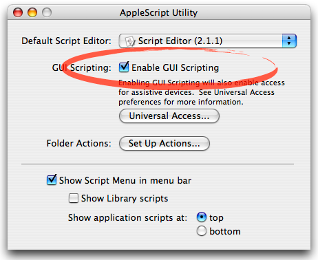

FrontAccess is an AppleScript module to obtain information for application process and its frontmost document using GUI Scripting. FrontAccess can help building a script which does not depend on a certain application.
The features of FrontAccess are..
FrontAccess requires GUI Scripting. You can enable GUI Scripting with AppleScript Utility.
